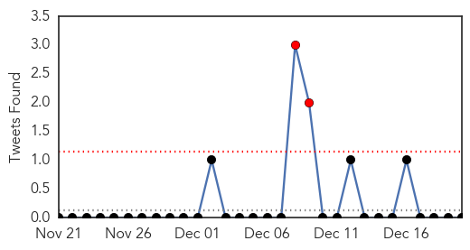
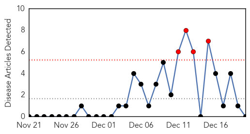

Influenza
30-Day Web Trend
1 alerts, 0 warnings

30-Day Twitter Trend
2 alerts, 0 warnings

Article Locations
Article Confidences

Top Articles:
- 1.000
- Dallas County confirms second flu-related death and widespread outbreak
- 0.999
- Is this year's flu vaccine working?
- 0.998
- First reported flu deaths include woman in Snohomish County
- 0.997
- Hospital in Norwalk restricts visiting
- 0.986
- School flu cases increase in Aiken County but fall semester ends without disruption
- 0.965
- Virus infecting B.C. poultry a North American first
- 0.956
- South Korea halts U.S. poultry imports due to bird flu in U.S.
- 0.824
- Belarus suspends pork imports from Ukraine's Sumy Oblast
- 0.669
- Sukhna surveillance stepped up
Top Tweets:
-
No tweets found for Dec 20, 2014
Pertussis
30-Day Web Trend
4 alerts, 0 warnings

30-Day Twitter Trend
0 alerts, 0 warnings

Article Locations

Article Confidences

Top Articles:
-
No articles found for Dec 20, 2014
Top Tweets:
-
No tweets found for Dec 20, 2014